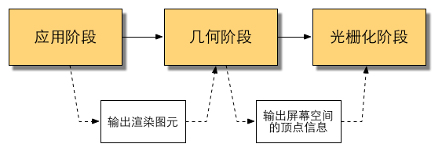

最早对pipeline的认识来自于learn-opengl网址上的介绍. 如下图所示.
将物体的顶点作为输入, 从一个3D坐标转为另一个3D坐标. 这也就是顶点着色器的作用.
下一步则是进行图元装配(primitive assembly). 图元是什么? 这个问题困扰过我很久, 而后在查阅了各类资料并与该网址对比后得知, 图元就是渲染的基础单位, 点、线、三角形、正方形...(但实际上图元只有三角形一种, 点线正方形都是由三角形变性组合而生成的).
为了让OpenGL知道我们的坐标和颜色值构成的到底是什么，OpenGL需要你去指定这些数据所表示的渲染类型。我们是希望把这些数据渲染成一系列的点？一系列的三角形？还是仅仅是一个长长的线？做出的这些提示叫做图元(Primitive)
我从没有了解过几何着色器, 写这篇笔记时我查阅了一些资料, 有一张图是我认为可以帮助理解, 如下所示. 几何着色器作为vertex shader与pixel shader的中间层存在着. 在dx10中第一次出现几何着色器的使用, 它主要的功能是以部分顶点信息来批量处理几何图形, 对vertex旁边的数据快速处理, 创造出新的多边形.
在learnopengl了解到, 几何着色器将输入的几个顶点, 绘制成一个以上简单的图元, 通常是以三角形的形式来存在的. 最常见的还是使用在爆炸效果中, 可以知道常见的爆炸并不是破坏物体的面片, 而是让其沿法线方向进行一定的运动. 无论物体有多复杂, 我们都可以通过三角形的3个顶点来实现, 两条线段进行叉乘即可获得法线, 从而完成爆炸计算.

下一个阶段则是被称为光栅化阶段. 将primitive映射成屏幕上的像素点, 之后会对图形进行裁切, 剪除视野内看不到的像素点, 提高效率减少fragment shader浪费计算. 之后通过fragment shader完成上色方面的计算, 最后经过test与blend形成最后的颜色.
本书上对渲染管线的理解来源于real-time rendering这本渲染天书中. 书中对渲染管线分成了三个阶段, 应用阶段、几何阶段与光栅化阶段.


颜色表示了不同阶段的可配置性或可编程性：绿色表示该流水线阶段是完全可编程控制的，黄色表示该流水线阶段可以配置但不是可编程的，蓝色表示该流水线阶段是由GPU固定实现的，开发者没有任何控制权。实线表示该shader必须由开发者编程实现，虚线表示该Shader是可选的
pipeline的起点是cpu, 以下则是cpu行为的三个阶段:
在CPU与GPU之间使用一个命令缓冲区(Command Buffer). CPU往Command Buffer的队列中添加命令, 而GPU每完成一个渲染任务后则从中读取命令, 并去执行.
因为每一次Draw Call前要进行许多零碎的工作, 当次数多了之后, 这些零碎的工作则会消耗CPU大量的性能去执行. 导致CPU过载, 从而帧数降低.
使用批处理(Batching)的方式来降低Draw Call(只是其中一种方式). 通过把多个网格合并成一个网格保存在内存中, 来降低DC, 而合并网格也需要消耗时间, 所以这个方法适用于静态物体, 对于动态物体的批处理可能还会得不偿失. 像上述的一个大的网格只消耗一次DC. 要注意的是, 一个网格内的物体只能使用同一种渲染状态, 如果之间会使用不同的渲染状态则无法使用批处理.